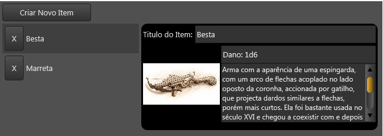
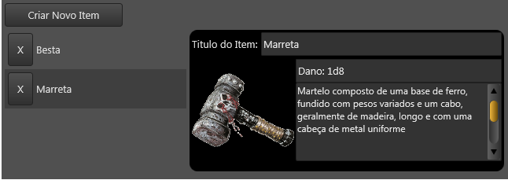
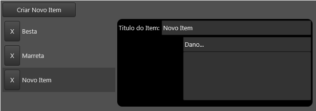
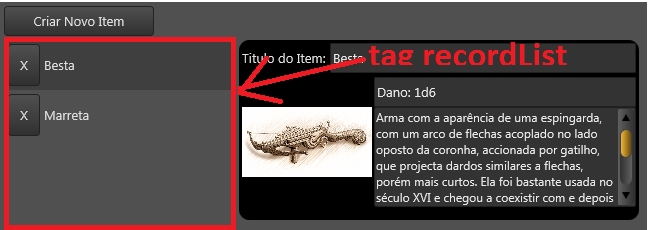
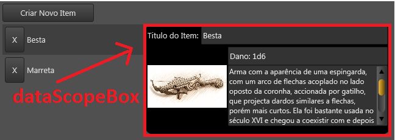
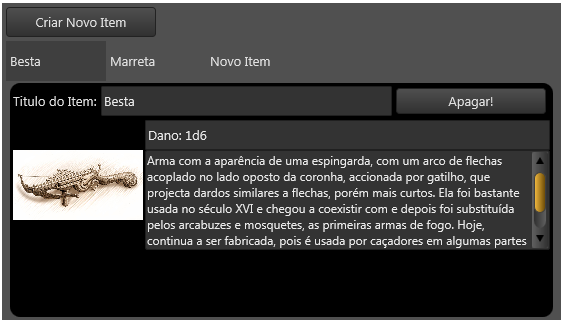
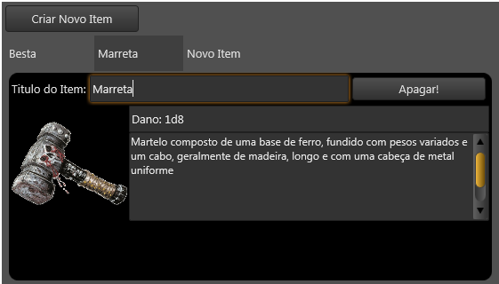

Criar uma lista dinâmica + painel de detalhes
Criar uma lista dinâmica + painel de detalhes
Este tutorial vai ensinar a criar uma lista dinâmica de itens que, quando você selecionar um dos itens desta lista, exibe um painel detalhando as informações sobre o item selecionado.
É recomendado você ler Criar uma lista dinâmica na ficha antes, pois este tutorial utiliza a mesma ideia.
Dois arquivos Lua Form (extensão ".LFM")
Utilizaremos a tag recordList neste tutorial, portanto, você deve possuir dois arquivos ".lfm":
- O arquivo Lua Form principal que contém a tag recordList
- O arquivo Lua Form Template dos Itens do Record List: Este form vai ser instanciado 1 vez para cada item na lista.
Neste tutorial, chamaremos o arquivo Lua Form Principal de "MinhaFicha.lfm" e o arquivo Lua Form Template dos Itens de "ItemDaLista.lfm"
Imagens
\ \ \ \ \
Sobre a implementação
A ideia para criar esta lista dinâmica com painel de detalhes é bem simples. Existem dois componentes chaves nesta ideia:
- Você precisa de um recordList que funcionará como uma lista onde o usuário possa escolher o item.
- Você precisará de um dataScopeBox que conterá as tags que são apresentadas no painel de detalhes.
Quando o usuário escolher um item no recordList (evento "onSelect" da tag recordList), fazemos com que os componentes que estão dentro do dataScopeBox passem a salvar/carregar dados neste item ao alterar o escopo de dados das tags que estão dentro. Caso tenha dúvida sobre escopo de dados, veja Escopo de Dados no Lua Form


Código Fonte
| Arquivo “MinhaFicha.lfm” |
|---|
| \<?xml version="1.0" encoding="UTF-8"?> \<form name="frmFTeste" theme="dark" padding="{left=4, top=4, right=4, bottom=4}"> \<!-- Botão de inserir novo item à lista --> \<layout align="top" height="30" margins="{bottom=4}"> \<button text="Criar Novo Item" width="150" align="left"> \<event name="onClick"> -- Usuário clicou no botão de criar novo item. -- Vamos inserir um novo item no nosso recordList * self.rclListaDosItens:append(); \</event> \</button> \</layout> \<!-- recordList, representando a lista --> \<recordList name="rclListaDosItens" field="campoDosItens" templateForm="frmItemDaLista" align="client" selectable="true"> \<event name="onSelect"> --[[ Este evento é chamado quando o usuário selecionar/deselecionar itens da lista. Quando o usuário selecionar, vamos fazer nosso dataScopeBox (e todas as tag dentro dele) salvar e carregar dados no objeto Nodo (NodeDatabase) do item selecionado. --]] local node = self.rclListaDosItens.selectedNode; self.boxDetalhesDoItem.node = node; -- a caixa de detalhe só ficará visível se houver item selecionado self.boxDetalhesDoItem.visible = (node ~= nil); \</event> \</recordList> \<!-- dataScopeBox representando a nossa caixa de detalhes --> \<dataScopeBox name="boxDetalhesDoItem" visible="false" align="right" width="400" margins="{left=4, right=4}"> \<!-- Faça um layout "bonito" para sua caixa de detalhes =). Utilize a propriedade "field" nas tags aqui dentro --> \<rectangle align="top" color="black" xradius="10" yradius="10" height="180" padding="{top=3, left=3, right=3, bottom=3}"> \<layout align="top" height="30" margins="{bottom=4}"> \<label align="left" text="Titulo do Item:" autoSize="true"/> \<edit align="client" field="campoTitulo"/> \</layout> \<layout align="top" height="130"> \<image align="left" editable="true" field="campoURLImagem" width="130"/> \<layout align="client" margins="{left=2}"> \<edit align="top" field="campoSubTitulo" height="30"/> \<textEditor align="top" field="campoTextoGrande" height="100"/> \</layout> \</layout> \</rectangle> \</dataScopeBox> \</form>* |
| Arquivo “ItemDaLista.lfm” |
|---|
| \<?xml version="1.0" encoding="UTF-8"?> \<form name="frmItemDaLista" height="50" theme="dark"> \<layout align="client" margins="{left=4, right=4, top=4, bottom=4}"> \<!-- Botão para apagar o item da lista --> \<button align="left" width="32" text="X" onClick="ndb.deleteNode(sheet);"/> \<!-- O título do item que aparece na lista --> \<label align="client" text="Teste de label" field="campoTitulo" margins="{left=4}"/> \</layout> \</form> |
Lista Dinâmica + Painel de Detalhes alternativo

Código Fonte Alternativo
| Arquivo “MinhaFicha.lfm” |
|---|
| \<?xml version="1.0" encoding="UTF-8"?> \<form name="frmFTeste" theme="dark" padding="{left=4, top=4, right=4, bottom=4}"> \<!-- Botão de inserir novo item à lista --> \<layout align="top" height="30" margins="{bottom=4}"> \<button text="Criar Novo Item" width="150" align="left"> \<event name="onClick"> -- Usuário clicou no botão de criar novo item. -- Vamos inserir um novo item no nosso recordList * self.rclListaDosItens:append(); \</event> \</button> \</layout> \<!-- recordList, representando a lista --> \<recordList name="rclListaDosItens" field="campoDosItens" templateForm="frmItemDaLista" align="top" selectable="true" layout="horizontal" height="40"> \<event name="onSelect"> --[[ Este evento é chamado quando o usuário selecionar/deselecionar itens da lista. Quando o usuário selecionar, vamos fazer nosso dataScopeBox (e todas as tag dentro dele) salvar e carregar dados no objeto Nodo (NodeDatabase) do item selecionado. --]] local node = self.rclListaDosItens.selectedNode; self.boxDetalhesDoItem.node = node; -- a caixa de detalhe só ficará visível se houver item selecionado self.boxDetalhesDoItem.visible = (node ~= nil); \</event> \</recordList> \<!-- dataScopeBox representando a nossa caixa de detalhes --> \<dataScopeBox name="boxDetalhesDoItem" visible="false" align="client" margins="{left=4, right=4, top=2}"> \<!-- Faça um layout "bonito" para sua caixa de detalhes =). Utilize a propriedade "field" nas tags aqui dentro --> \<rectangle align="client" color="black" xradius="10" yradius="10" padding="{top=3, left=3, right=3, bottom=3}"> \<layout align="top" height="30" margins="{bottom=4}"> \<label align="left" text="Titulo do Item:" autoSize="true"/> \<edit align="client" field="campoTitulo"/> \<!-- Botão de apagar o item --> \<button align="right" text="Apagar!" margins="{left=4, right=4, top=2, bottom=2}" width="150" onClick="ndb.deleteNode(self.boxDetalhesDoItem.node);" /> \</layout> \<layout align="top" height="130"> \<image align="left" editable="true" field="campoURLImagem" width="130"/> \<layout align="client" margins="{left=2}"> \<edit align="top" field="campoSubTitulo" height="30"/> \<textEditor align="top" field="campoTextoGrande" height="100"/> \</layout> \</layout> \</rectangle> \</dataScopeBox> \</form>* |
| Arquivo “ItemDaLista.lfm” |
|---|
| \<?xml version="1.0" encoding="UTF-8"?> \<form name="frmItemDaLista" height="50" width="100"> \<!-- O título do item que aparece na lista --> \<label align="client" text="Teste de label" field="campoTitulo" margins="{left=4, right=4, top=4, bottom=4}"/> \<!-- Adicionar um valor padrão para o campoTitulo caso esteja vazio. Isto é especialmente útil em novos itens --> \<dataLink field="campoTitulo" defaultValue="Titulo Aqui"/> \</form> |
Incrementando o código: Selecionar o primeiro item ao carregar os dados
Trate o evento "onEndEnumeration" da tag recordList com o seguinte código:
| \<event name="onEndEnumeration"> if self.rclListaDosItens.selectedNode == nil and sheet ~= nil then local nodes = ndb.getChildNodes(sheet.campoDosItens); if #nodes > 0 then self.rclListaDosItens.selectedNode = nodes[1]; end; end; \</event> |
|---|
Veja Tratando eventos do Lua Form.
Created with the Personal Edition of HelpNDoc: Powerful and User-Friendly Help Authoring Tool for Markdown Documents